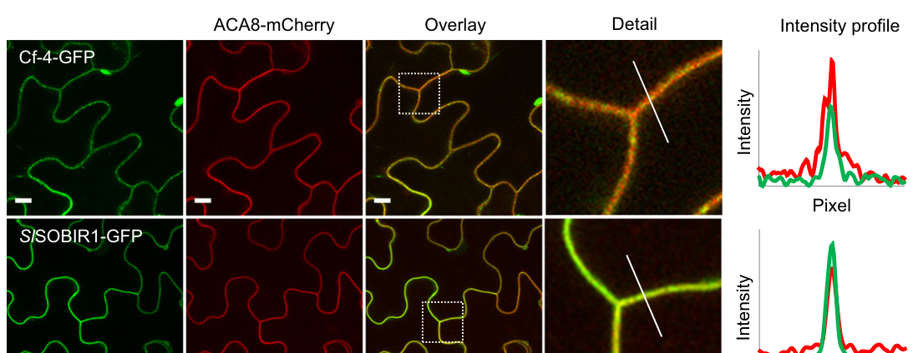
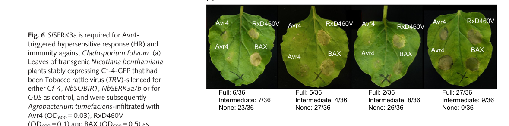

Cf-4 (Hcr9-4D) is a cell-surface receptor-like protein (RLP) from the wild tomato Solanum habrochaites (Lycopersicon hirsutum), introgressed into cultivated tomato, that confers race-specific resistance to the leaf mould fungus Fulvia fulva (Cladosporium fulvum) strains secreting the effector AVR4. The 806-residue type I transmembrane glycoprotein has a signal peptide, N-terminal flanking domains, 25 extracellular leucine-rich repeats (LRRs), a single transmembrane segment and a short cytoplasmic tail with no kinase domain. It shares more than 91% identity with its paralogue Cf-9 (27 LRRs, recognises AVR9); recognition specificity maps to the N-terminal domains, the central LRRs (notably LRRs 11-12) and LRR copy number. Cf-4 resides in the plasma membrane with its ectodomain facing the apoplast, where the fungus grows. It forms a constitutive complex with the receptor-like kinase SOBIR1, which is needed for Cf-4 stability and signalling; AVR4 perception recruits the co-receptor BAK1/SERK3, triggers endocytosis of Cf-4 to late endosomes, and initiates reactive oxygen species production, MAP kinase activation and a hypersensitive cell-death response that restricts fungal growth. Direct binding of AVR4 by Cf-4 has not been demonstrated. Cf-4 lies in a cluster of five Hcr9 paralogues on chromosome 1; functional AVR4-recognising homologues occur throughout wild tomato species.
| GO Term | Evidence | Action | Reason |
|---|---|---|---|
|
GO:0002768
immune response-regulating cell surface receptor signaling pathway
|
EXP
PMID:23716655 Receptor-like kinase SOBIR1/EVR interacts with receptor-like... |
ACCEPT |
Summary: Liebrand et al. showed that the RLK SOBIR1/EVR interacts with Cf-4 in planta, is required for Cf-4 stability, and is required for the Cf-4-mediated hypersensitive response and immunity [PMID:23716655].
Reason: Cf-4 is the cell-surface receptor that starts this pathway: it lacks a kinase domain and signals through a constitutive complex with SOBIR1, with the co-receptor BAK1/SERK3 recruited after AVR4 elicitation [PMID:26765243]. This is participation (receptor initiating the signal), not mere necessity, and is more mechanistic than defense response to fungus. A slightly more specific term (GO:0002429 immune response-activating cell surface receptor signaling pathway) would also fit, but the current term is correct and matches the paralogous CF-9 review.
Supporting Evidence:
PMID:23716655
Here we show that the tomato ortholog of the Arabidopsis thaliana RLK Suppressor Of BIR1-1/Evershed (SOBIR1/EVR) and its close homolog S. lycopersicum (Sl)SOBIR1-like interact in planta with both Cf-4 and Ve1 and are required for the Cf-4- and Ve1-mediated hypersensitive response and immunity.
PMID:26765243
after elicitation with matching effector ligands Avr4 and Avr9, BRI1-ASSOCIATED KINASE 1/SOMATIC EMBRYOGENESIS RECEPTOR KINASE 3 (BAK1/SERK3) associates with Cf-4 and Cf-9.
|
|
GO:0005886
plasma membrane
|
IEA
GO_REF:0000044 |
ACCEPT |
Summary: UniProt subcellular-location mapping (cell membrane; single-pass type I membrane protein).
Reason: Correct and experimentally supported: live-cell imaging showed that Cf-4 interacts with SOBIR1 at the plasma membrane before AVR4-triggered recruitment to late endosomes [PMID:26765243]. Plasma-membrane location fits perception of the apoplastic AVR4 effector. Endosomes are a post-activation trafficking compartment, not the site of recognition.
Supporting Evidence:
PMID:26765243
Cf-4 interacts with SOBIR1 at the plasma membrane and is recruited to late endosomes upon Avr4 trigger, also depending on BAK1/SERK3.
|
|
GO:0038187
pattern recognition receptor activity
|
EXP
PMID:23716655 Receptor-like kinase SOBIR1/EVR interacts with receptor-like... |
MODIFY |
Summary: Same paper as above: SOBIR1/EVR forms a complex with Cf-4 and is required for Cf-4-mediated immunity [PMID:23716655].
Reason: Cf-4 is an immune receptor, but GO:0038187 is defined as combining with a pathogen-associated molecular pattern, "a structure conserved among microbial species". AVR4 is a race-specific effector of F. fulva (strains evade Cf-4 by AVR4 mutation), not a broadly conserved PAMP, and direct Cf-4-AVR4 binding has not been shown. The paper itself demonstrates complex formation with SOBIR1 and requirement for signalling, not ligand binding. GO:0140376 innate immune receptor activity ("receiving a signal and transmitting it in a cell to initiate an innate immune response") describes the demonstrated activity without asserting PAMP binding; it is already annotated to Cf-4 by EXP and is the term used for the paralogue Cf-9.
Proposed replacements:
innate immune receptor activity
Supporting Evidence:
PMID:23716655
The RLPs Cf-4 and Ve1 of tomato (Solanum lycopersicum) mediate resistance to the fungal pathogens Cladosporium fulvum and Verticillium dahliae, respectively.
file:SOLHA/Cf-4/Cf-4-deep-research-falcon.md
the evidence examined here does not establish a purified-protein binding constant or a resolved direct Cf-4–Avr4 structure
|
|
GO:0050832
defense response to fungus
|
IEA
GO_REF:0000117 |
ACCEPT |
Summary: ARBA machine-learning rule assigning defense response to fungus.
Reason: Correct for Cf-4, which recognises AVR4 and initiates the defence response that restricts F. fulva; transgenic and chimera studies show Cf-4 sequences are required for AVR4-dependent HR and resistance to the fungus [PMID:11226184]. The receptor performs part of the process (perception and signal initiation), so this is participation. Consistent with the CF-9 review.
Supporting Evidence:
PMID:11226184
The tomato Cf-4 and Cf-9 genes confer resistance to infection by the biotrophic leaf mold pathogen Cladosporium. Their protein products induce a hypersensitive response (HR) upon recognition of the fungus-encoded Avr4 and Avr9 peptides.
|
|
GO:0140376
innate immune receptor activity
|
EXP
PMID:15469522 Cladosporium fulvum circumvents the second functional resist... |
ACCEPT |
Summary: Westerink et al. isolated Avr4E, the ligand recognised by Hcr9-4E, a second functional Hcr9 at the Cf-4 locus; the abstract identifies Hcr9-4D as the functional Cf-4 gene matching Avr4 [PMID:15469522].
Reason: The cached abstract centres on Hcr9-4E/Avr4E rather than on Cf-4 (Hcr9-4D, this entry), and only the abstract is available, so what the curator (PHI-base) used from the full text (e.g. Cf-4/Avr4 controls in MM-Cf4 plants) cannot be checked. The function asserted is nonetheless clearly correct for Cf-4, which receives the AVR4 signal and initiates innate immunity [PMID:23716655, PMID:26765243], so the annotation is accepted, deferring to the curator. Whether this row was intended for the Hcr9-4E entry is raised as a suggested question.
Supporting Evidence:
PMID:15469522
While Hcr9-4D represents the functional Cf-4 resistance gene matching Avr4, Hcr9-4E confers resistance towards C. fulvum by mediating recognition of the novel avirulence determinant Avr4E.
PMID:26765243
These observations indicate that RLP-mediated resistance and endocytosis require ligand-induced recruitment of BAK1/SERK3
|
|
GO:0140376
innate immune receptor activity
|
EXP
PMID:9437864 Characterization of the tomato Cf-4 gene for resistance to C... |
ACCEPT |
Summary: Cloning and characterisation of Cf-4, a membrane-anchored extracellular LRR glycoprotein whose N-terminal differences from Cf-9 delimit the region that determines recognitional specificity [PMID:9437864].
Reason: Core molecular function. Cf-4 receives the AVR4 signal at the cell surface and transmits it, via SOBIR1 and BAK1/SERK3, to initiate an innate immune response. GO:0140376 does not require direct ligand binding, which is appropriate since direct Cf-4-AVR4 binding is not established. Specificity determinants lie in Cf-4 itself (N-terminal domains and LRRs 11-12) [PMID:11226184].
Supporting Evidence:
PMID:9437864
Amino acid differences distinguishing Cf-4 and Cf-9 are confined to their N termini, delimiting a region that determines the recognitional specificity of ligand binding.
PMID:11226184
Additional sequences required for Cf-4 function are located in LRRs 11 and 12, a region that contains only eight of the 67 amino acids that distinguish it from Cf-9.
|
Q: Does Cf-4 bind AVR4 directly, or does it act with an additional AVR4-binding component? A specific binding MF would be warranted only if direct binding is shown.
Q: The PHI-base EXP row for innate immune receptor activity citing PMID:15469522 concerns a paper about Hcr9-4E/Avr4E. Was it intended for the Hcr9-4E (Cf-4E) UniProt entry rather than Cf-4 (Hcr9-4D, O50025)?
Q: GO:0038187 pattern recognition receptor activity is defined by PAMP binding; is there a GO convention for annotating cell-surface receptors of race-specific apoplastic effectors (such as Cf-4, Cf-9, Ve1), which currently fall between PRR and innate immune receptor terms?
Experiment: Test direct AVR4 binding by purified Cf-4 ectodomain (alone and with SOBIR1 and BAK1 ectodomains) using ITC or cross-linking with labelled AVR4, and solve a receptor-effector complex structure to define the recognition interface.
The research report should be a detailed narrative explaining the function, biological processes, and localization of the gene product. Citations should be given for all claims.
You should prioritize authoritative reviews and primary scientific literature when conducting research. You can supplement
this with annotations you find in gene/protein databases, but these can be outdated or inaccurate.
We are specifically interested in the primary function of the gene - for enzymes, what reaction is catalyzed, and what is the substrate specificity? For transporters, what is the substrate? For structural proteins or adapters, what is the broader structural role? For signaling molecules, what is the role in the pathway.
We are interested in where in or outside the cell the gene product carries out its function.
We are also interested in the signaling or biochemical pathways in which the gene functions. We are less interested in broad pleiotropic effects, except where these elucidate the precise role.
Include evidence where possible. We are interested in both experimental evidence as well as inference from structure, evolution, or bioinformatic analysis. Precise studies should be prioritized over high-throughput, where available.
The supplied UniProt record identifies Cf-4 (O50025; EMBL protein CAA05268.1) from Solanum habrochaites, formerly Lycopersicon hirsutum. This assignment is consistent with primary genetic literature identifying L. hirsutum as the source of the Cf-4 resistance locus introgressed into cultivated tomato. The protein is an extracellular leucine-rich-repeat receptor-like protein (LRR-RLP), consistent with the supplied LRR and RLP-family annotations. It must not be confused with Cf-4A/Hcr9-4E, a neighboring, homologous locus product deposited as L. esculentum Cf-4A (EMBL Y12640): disrupting Cf-4A impaired resistance to a fungal race but did not abolish the Avr4-specific response. The retrieved papers do not themselves provide an explicit sequence-level cross-reference from CAA05268.1 to the Cf-4 construct used in every later experiment; mechanistic findings below concern the experimentally studied Avr4-responsive Cf-4, not Cf-4A. (takken1998identificationanddstagged pages 1-2, takken1998identificationanddstagged pages 7-8, takken1998identificationanddstagged pages 11-11)
Cf-4 is a cell-surface immune sensor for the secreted fungal effector Avr4. Its principal biological role is to initiate resistance to Avr4-producing Fulvia fulva (syn. Cladosporium fulvum), the agent of tomato leaf mold. This is a specific recognition relationship: Cf-2 responds to Avr2 and Cf-9 to Avr9, rather than Avr4. Avr4 expression elicits a hypersensitive, localized cell-death response in Cf-4 plants; the Avr4-responsive Cf-4 gene was reported to confer resistance in transgenic plants. Cf-4 is not an enzyme or transporter: no catalytic reaction or transported substrate is assigned to it. Avr4 is its recognized extracellular signal, not a metabolic substrate. (takken1998identificationanddstagged pages 7-8, postma2016avr4promotescf4 pages 1-2, cai2024receptorlikeproteinsdecisionmakers pages 7-9)
The fungal protein Avr4 binds chitin and helps shield the fungal cell wall against host chitinases. That chitin-binding activity belongs to Avr4, not Cf-4. Cf-4 also responds to Avr4 homologues from other fungi, but recognizing these homologues does not establish broad protection against those fungi. Although genetic specificity and receptor-complex responses strongly support Avr4 perception by Cf-4, the evidence examined here does not establish a purified-protein binding constant or a resolved direct Cf-4–Avr4 structure. The proposal that a chitin-binding-region feature of Avr4 contacts Cf-4 remains a mechanistic hypothesis; notably, an Avr4 proline implicated in elicitation can be dispensable for chitin binding. (postma2016avr4promotescf4 pages 11-12)
Cf-4 has an N-terminal extracellular LRR-containing recognition region, a membrane-spanning segment and a short intracellular region without its own kinase domain. The supplied InterPro assignments—plant-type LRRs, an LRR superfamily domain and an RLP23-like family annotation—accord with this architecture; the RLP23-like classification does not establish that Cf-4 recognizes RLP23’s nlp20 ligand. Comparative analysis of Cf-4 and Cf-9 places much of their different recognition specificity in the divergent N-terminal extracellular region rather than their conserved membrane-proximal signaling architecture. A later review describes 25 extracellular LRRs for Cf-4, versus 27 for Cf-9; the separately characterized Cf-4A also has 25 predicted LRRs, so repeat count alone cannot distinguish the neighboring genes. (cai2024receptorlikeproteinsdecisionmakers pages 1-3, takken1998identificationanddstagged pages 1-2, budak2026cf4andcf5triggered pages 4-8, huang2025immunesignalingreceptorlike pages 5-7)
The functional site is the plant plasma membrane, facing the leaf apoplast. This placement matches the pathogen’s extracellular growth and secretion of Avr4 into the apoplast. In live-cell experiments, fluorescent Cf-4 localized with a plasma-membrane marker and with its associated signaling kinase SOBIR1. Following Avr4—but not the nonmatching Avr2—Cf-4 entered intracellular ARA6/ARA7-positive late-endosomal compartments with SOBIR1; trafficking toward vacuolar degradation is the proposed subsequent fate. Thus, endosomes are an observed post-activation trafficking compartment, whereas extracellular recognition occurs at the cell surface. These imaging experiments used Cf-4 expressed in Nicotiana benthamiana; the species is an experimental host, not the stated wild-tomato source of the gene. Visual evidence: the cropped plasma-membrane localization panels from Postma et al. Figure 1 support the localization assignment. (postma2016avr4promotescf4 pages 1-2, postma2016avr4promotescf4 pages 4-5, postma2016avr4promotescf4 pages 2-3, postma2016avr4promotescf4 media 0537866a)
Cf-4 constitutively associates with the transmembrane kinase SOBIR1, which supplies signaling capacity that Cf-4 lacks. Recognition of matching Avr4 promotes association of the receptor system with BAK1/SERK3; SERK1 also participates. Co-immunoprecipitation detected SOBIR1 with Cf-4 irrespective of treatment, but detected Cf-4–SERK3a association specifically after Avr4 rather than Avr2 or flg22 treatment. SERK3 silencing reduced Avr4-induced Cf-4 endocytosis, while functional BAK1—but not a kinase-inactive BAK1 variant—restored it. A Cf-4–SOBIR1–SERK signaling complex is therefore well supported, although the original co-immunoprecipitation experiments did not alone prove the exact simultaneous stoichiometry of a three-protein complex. (postma2016avr4promotescf4 pages 8-9, postma2016avr4promotescf4 pages 11-12)
Recent mechanistic advance (May 2024): Huang et al. demonstrated reciprocal in-vitro phosphorylation between SOBIR1 and BAK1 and used N. benthamiana expressing Cf-4 to dissect downstream signaling. NbSOBIR1 Thr522 was required for intrinsic kinase activity and Avr4/Cf-4-associated immune outputs. Tyr469 had a distinct role: it was required for MAP-kinase activation and the hypersensitive response, but not for the tested ROS response or intrinsic kinase activity. Knockouts of receptor-like cytoplasmic kinase groups RLCK-VII-6, -7 and -8 affected different components of the biphasic Avr4-triggered reactive-oxygen-species burst; VII-7 members were also important for hypersensitive cell death. These experiments identify routes from the surface kinase complex to ROS, MAPK and cell-death signaling; their phosphorylation and knockout results should not be read as demonstrating that Cf-4 itself is a kinase. A specialist review further identifies the intracellular helper NLR NRC3 as important downstream of Cf-4-mediated cell death in solanaceous experimental systems, an additional signaling requirement rather than a change in Cf-4’s cell-surface identity. (huang2024receptorlikecytoplasmickinases pages 1-2, huang2023receptorlikecytoplasmickinases pages 18-20, huang2025immunesignalingreceptorlike pages 7-9)
The resistance phenotype is supported by pathogen assays, not only by visible cell death. In Postma et al.’s Cf-4 tomato experiment, successful fungal-colonization spots were reported as 12 across 44 sampled leaves after control silencing, versus 364 across 36 leaves after SlSERK3a silencing and more than 500 across 32 leaves after Cf-4 silencing; these are spot counts and leaf counts, not percentages of infected leaves. In a separate N. benthamiana assay, full Avr4-induced hypersensitive responses occurred in 27/36 control infiltrations, compared with 2/36 after NbSERK3a/b silencing. Together, the results support a requirement for Cf-4 and its signaling partners in restricting Avr4-producing fungus. Visual evidence: cropped Postma et al. Figure 6 panels show the response scores and colonization assays. (postma2016avr4promotescf4 pages 10-11, postma2016avr4promotescf4 media a5de3b70, postma2016avr4promotescf4 media 0205d2f7)
Cf-4 is a defined source of race-specific leaf-mold resistance that has been transferred from wild-tomato germplasm into cultivated tomato and is useful both in resistance breeding and as an experimental model for extracellular immune-receptor signaling. It is not expected to protect against every F. fulva isolate: receptor-mediated protection depends on a recognizable fungal effector. An effector-screening study illustrates the broader breeding approach, identifying 70 apoplastic, infection-induced fungal small secreted proteins and testing 41 for recognition; nine elicited responses in at least one wild-tomato accession. These screening numbers describe discovery of additional candidate specificities, not a measured success rate for Cf-4 deployment. Reports of resistance-breaking fungal strains motivate combining and monitoring complementary Cf specificities, rather than assuming single-gene durability. (takken1998identificationanddstagged pages 1-2, mesarich2018specifichypersensitiveresponse–associated pages 7-9, mesarich2018specifichypersensitiveresponse–associated pages 5-7, mesarich2018specifichypersensitiveresponse–associated pages 26-28)
Evidence boundary: the strongest direct support for localization, co-receptor recruitment and fungal restriction comes from cultivated Cf-4 tomato and transgenic N. benthamiana. The 2024 kinase/RLCK results principally use the latter system. They support functional annotation of the S. habrochaites-origin Cf-4 receptor, but do not constitute separate measurements of every signaling step in unmodified wild S. habrochaites. Direct Avr4-binding kinetics and a receptor–effector structure are not established by the sources assessed here. (takken1998identificationanddstagged pages 1-2, postma2016avr4promotescf4 pages 8-9, huang2024receptorlikecytoplasmickinases pages 1-2, postma2016avr4promotescf4 pages 11-12)
References
(takken1998identificationanddstagged pages 1-2): F. Takken, D. Schipper, H. Nijkamp, and J. Hille. Identification and ds-tagged isolation of a new gene at the cf-4 locus of tomato involved in disease resistance to cladosporium fulvum race 5. The Plant journal : for cell and molecular biology, 14 4:401-11, May 1998. URL: https://doi.org/10.1046/j.1365-313x.1998.00135.x, doi:10.1046/j.1365-313x.1998.00135.x. This article has 111 citations.
(takken1998identificationanddstagged pages 7-8): F. Takken, D. Schipper, H. Nijkamp, and J. Hille. Identification and ds-tagged isolation of a new gene at the cf-4 locus of tomato involved in disease resistance to cladosporium fulvum race 5. The Plant journal : for cell and molecular biology, 14 4:401-11, May 1998. URL: https://doi.org/10.1046/j.1365-313x.1998.00135.x, doi:10.1046/j.1365-313x.1998.00135.x. This article has 111 citations.
(takken1998identificationanddstagged pages 11-11): F. Takken, D. Schipper, H. Nijkamp, and J. Hille. Identification and ds-tagged isolation of a new gene at the cf-4 locus of tomato involved in disease resistance to cladosporium fulvum race 5. The Plant journal : for cell and molecular biology, 14 4:401-11, May 1998. URL: https://doi.org/10.1046/j.1365-313x.1998.00135.x, doi:10.1046/j.1365-313x.1998.00135.x. This article has 111 citations.
(postma2016avr4promotescf4 pages 1-2): Jelle Postma, Thomas W. H. Liebrand, Guozhi Bi, Alexandre Evrard, Ruby R. Bye, Malick Mbengue, Hannah Kuhn, Matthieu H. A. J. Joosten, and Silke Robatzek. Avr4 promotes cf-4 receptor-like protein association with the bak1/serk3 receptor-like kinase to initiate receptor endocytosis and plant immunity. The New phytologist, 210 2:627-42, Apr 2016. URL: https://doi.org/10.1111/nph.13802, doi:10.1111/nph.13802. This article has 191 citations.
(cai2024receptorlikeproteinsdecisionmakers pages 7-9): Minrui Cai, Hongqiang Yu, E. Sun, and Cunwu Zuo. Receptor-like proteins: decision-makers of plant immunity. Phytopathology Research, Nov 2024. URL: https://doi.org/10.1186/s42483-024-00279-0, doi:10.1186/s42483-024-00279-0. This article has 24 citations and is from a peer-reviewed journal.
(postma2016avr4promotescf4 pages 11-12): Jelle Postma, Thomas W. H. Liebrand, Guozhi Bi, Alexandre Evrard, Ruby R. Bye, Malick Mbengue, Hannah Kuhn, Matthieu H. A. J. Joosten, and Silke Robatzek. Avr4 promotes cf-4 receptor-like protein association with the bak1/serk3 receptor-like kinase to initiate receptor endocytosis and plant immunity. The New phytologist, 210 2:627-42, Apr 2016. URL: https://doi.org/10.1111/nph.13802, doi:10.1111/nph.13802. This article has 191 citations.
(cai2024receptorlikeproteinsdecisionmakers pages 1-3): Minrui Cai, Hongqiang Yu, E. Sun, and Cunwu Zuo. Receptor-like proteins: decision-makers of plant immunity. Phytopathology Research, Nov 2024. URL: https://doi.org/10.1186/s42483-024-00279-0, doi:10.1186/s42483-024-00279-0. This article has 24 citations and is from a peer-reviewed journal.
(budak2026cf4andcf5triggered pages 4-8): Esranur Budak, Henrique Aguiar Canha, and Matthieu H.A.J. Joosten. Cf-4- and cf-5-triggered plant immunity: similarities and differences. Jun 2026. URL: https://doi.org/10.64898/2026.06.10.731257, doi:10.64898/2026.06.10.731257. This article has 0 citations.
(huang2025immunesignalingreceptorlike pages 5-7): Wen R.H. Huang and Matthieu H.A.J. Joosten. Immune signaling: receptor-like proteins make the difference. Trends in Plant Science, 30:54-68, Jan 2025. URL: https://doi.org/10.1016/j.tplants.2024.03.012, doi:10.1016/j.tplants.2024.03.012. This article has 67 citations and is from a domain leading peer-reviewed journal.
(postma2016avr4promotescf4 pages 4-5): Jelle Postma, Thomas W. H. Liebrand, Guozhi Bi, Alexandre Evrard, Ruby R. Bye, Malick Mbengue, Hannah Kuhn, Matthieu H. A. J. Joosten, and Silke Robatzek. Avr4 promotes cf-4 receptor-like protein association with the bak1/serk3 receptor-like kinase to initiate receptor endocytosis and plant immunity. The New phytologist, 210 2:627-42, Apr 2016. URL: https://doi.org/10.1111/nph.13802, doi:10.1111/nph.13802. This article has 191 citations.
(postma2016avr4promotescf4 pages 2-3): Jelle Postma, Thomas W. H. Liebrand, Guozhi Bi, Alexandre Evrard, Ruby R. Bye, Malick Mbengue, Hannah Kuhn, Matthieu H. A. J. Joosten, and Silke Robatzek. Avr4 promotes cf-4 receptor-like protein association with the bak1/serk3 receptor-like kinase to initiate receptor endocytosis and plant immunity. The New phytologist, 210 2:627-42, Apr 2016. URL: https://doi.org/10.1111/nph.13802, doi:10.1111/nph.13802. This article has 191 citations.
(postma2016avr4promotescf4 media 0537866a): Jelle Postma, Thomas W. H. Liebrand, Guozhi Bi, Alexandre Evrard, Ruby R. Bye, Malick Mbengue, Hannah Kuhn, Matthieu H. A. J. Joosten, and Silke Robatzek. Avr4 promotes cf-4 receptor-like protein association with the bak1/serk3 receptor-like kinase to initiate receptor endocytosis and plant immunity. The New phytologist, 210 2:627-42, Apr 2016. URL: https://doi.org/10.1111/nph.13802, doi:10.1111/nph.13802. This article has 191 citations.
(postma2016avr4promotescf4 pages 8-9): Jelle Postma, Thomas W. H. Liebrand, Guozhi Bi, Alexandre Evrard, Ruby R. Bye, Malick Mbengue, Hannah Kuhn, Matthieu H. A. J. Joosten, and Silke Robatzek. Avr4 promotes cf-4 receptor-like protein association with the bak1/serk3 receptor-like kinase to initiate receptor endocytosis and plant immunity. The New phytologist, 210 2:627-42, Apr 2016. URL: https://doi.org/10.1111/nph.13802, doi:10.1111/nph.13802. This article has 191 citations.
(huang2024receptorlikecytoplasmickinases pages 1-2): Wen R. H. Huang, Ciska Braam, Carola Kretschmer, Sergio Landeo Villanueva, Huan Liu, Filiz Ferik, Aranka M. Burgh, Jinbin Wu, Lisha Zhang, Thorsten Nürnberger, Yuluan Wang, Michael F. Seidl, Edouard Evangelisti, Johannes Stuttmann, and Matthieu H. A. J. Joosten. Receptor-like cytoplasmic kinases of different subfamilies differentially regulate sobir1/bak1-mediated immune responses in nicotiana benthamiana. Nature Communications, May 2024. URL: https://doi.org/10.1038/s41467-024-48313-1, doi:10.1038/s41467-024-48313-1. This article has 28 citations and is from a highest quality peer-reviewed journal.
(huang2023receptorlikecytoplasmickinases pages 18-20): Wen R.H. Huang, Ciska Braam, Carola Kretschmer, Huan Liu, Filiz Ferik, Aranka M. van der Burgh, Max Pluis, Agnes Omabour Hagan, Sergio Landeo Villanueva, Jinbin Wu, Amber van Loosbroek, Yulu Wang, Michael F. Seidl, Johannes Stuttmann, and Matthieu H.A.J. Joosten. Receptor-like cytoplasmic kinases belonging to different subfamilies mediate immune responses downstream of the cf-4 resistance protein in nicotiana benthamiana. bioRxiv, Apr 2023. URL: https://doi.org/10.1101/2023.04.25.538242, doi:10.1101/2023.04.25.538242. This article has 4 citations.
(huang2025immunesignalingreceptorlike pages 7-9): Wen R.H. Huang and Matthieu H.A.J. Joosten. Immune signaling: receptor-like proteins make the difference. Trends in Plant Science, 30:54-68, Jan 2025. URL: https://doi.org/10.1016/j.tplants.2024.03.012, doi:10.1016/j.tplants.2024.03.012. This article has 67 citations and is from a domain leading peer-reviewed journal.
(postma2016avr4promotescf4 pages 10-11): Jelle Postma, Thomas W. H. Liebrand, Guozhi Bi, Alexandre Evrard, Ruby R. Bye, Malick Mbengue, Hannah Kuhn, Matthieu H. A. J. Joosten, and Silke Robatzek. Avr4 promotes cf-4 receptor-like protein association with the bak1/serk3 receptor-like kinase to initiate receptor endocytosis and plant immunity. The New phytologist, 210 2:627-42, Apr 2016. URL: https://doi.org/10.1111/nph.13802, doi:10.1111/nph.13802. This article has 191 citations.
(postma2016avr4promotescf4 media a5de3b70): Jelle Postma, Thomas W. H. Liebrand, Guozhi Bi, Alexandre Evrard, Ruby R. Bye, Malick Mbengue, Hannah Kuhn, Matthieu H. A. J. Joosten, and Silke Robatzek. Avr4 promotes cf-4 receptor-like protein association with the bak1/serk3 receptor-like kinase to initiate receptor endocytosis and plant immunity. The New phytologist, 210 2:627-42, Apr 2016. URL: https://doi.org/10.1111/nph.13802, doi:10.1111/nph.13802. This article has 191 citations.
(postma2016avr4promotescf4 media 0205d2f7): Jelle Postma, Thomas W. H. Liebrand, Guozhi Bi, Alexandre Evrard, Ruby R. Bye, Malick Mbengue, Hannah Kuhn, Matthieu H. A. J. Joosten, and Silke Robatzek. Avr4 promotes cf-4 receptor-like protein association with the bak1/serk3 receptor-like kinase to initiate receptor endocytosis and plant immunity. The New phytologist, 210 2:627-42, Apr 2016. URL: https://doi.org/10.1111/nph.13802, doi:10.1111/nph.13802. This article has 191 citations.
(mesarich2018specifichypersensitiveresponse–associated pages 7-9): Carl H. Mesarich, Bilal Ӧkmen, Hanna Rovenich, Scott A. Griffiths, Changchun Wang, Mansoor Karimi Jashni, Aleksandar Mihajlovski, Jérôme Collemare, Lukas Hunziker, Cecilia H. Deng, Ate van der Burgt, Henriek G. Beenen, Matthew D. Templeton, Rosie E. Bradshaw, and Pierre J. G. M. de Wit. Specific hypersensitive response–associated recognition of new apoplastic effectors from cladosporium fulvum in wild tomato. Molecular Plant-Microbe Interactions®, 31:145-162, Jan 2018. URL: https://doi.org/10.1094/mpmi-05-17-0114-fi, doi:10.1094/mpmi-05-17-0114-fi. This article has 81 citations.
(mesarich2018specifichypersensitiveresponse–associated pages 5-7): Carl H. Mesarich, Bilal Ӧkmen, Hanna Rovenich, Scott A. Griffiths, Changchun Wang, Mansoor Karimi Jashni, Aleksandar Mihajlovski, Jérôme Collemare, Lukas Hunziker, Cecilia H. Deng, Ate van der Burgt, Henriek G. Beenen, Matthew D. Templeton, Rosie E. Bradshaw, and Pierre J. G. M. de Wit. Specific hypersensitive response–associated recognition of new apoplastic effectors from cladosporium fulvum in wild tomato. Molecular Plant-Microbe Interactions®, 31:145-162, Jan 2018. URL: https://doi.org/10.1094/mpmi-05-17-0114-fi, doi:10.1094/mpmi-05-17-0114-fi. This article has 81 citations.
(mesarich2018specifichypersensitiveresponse–associated pages 26-28): Carl H. Mesarich, Bilal Ӧkmen, Hanna Rovenich, Scott A. Griffiths, Changchun Wang, Mansoor Karimi Jashni, Aleksandar Mihajlovski, Jérôme Collemare, Lukas Hunziker, Cecilia H. Deng, Ate van der Burgt, Henriek G. Beenen, Matthew D. Templeton, Rosie E. Bradshaw, and Pierre J. G. M. de Wit. Specific hypersensitive response–associated recognition of new apoplastic effectors from cladosporium fulvum in wild tomato. Molecular Plant-Microbe Interactions®, 31:145-162, Jan 2018. URL: https://doi.org/10.1094/mpmi-05-17-0114-fi, doi:10.1094/mpmi-05-17-0114-fi. This article has 81 citations.
(huang2024receptorlikecytoplasmickinases pages 2-3): Wen R. H. Huang, Ciska Braam, Carola Kretschmer, Sergio Landeo Villanueva, Huan Liu, Filiz Ferik, Aranka M. Burgh, Jinbin Wu, Lisha Zhang, Thorsten Nürnberger, Yuluan Wang, Michael F. Seidl, Edouard Evangelisti, Johannes Stuttmann, and Matthieu H. A. J. Joosten. Receptor-like cytoplasmic kinases of different subfamilies differentially regulate sobir1/bak1-mediated immune responses in nicotiana benthamiana. Nature Communications, May 2024. URL: https://doi.org/10.1038/s41467-024-48313-1, doi:10.1038/s41467-024-48313-1. This article has 28 citations and is from a highest quality peer-reviewed journal.


id: O50025
gene_symbol: Cf-4
product_type: PROTEIN
status: COMPLETE
taxon:
id: NCBITaxon:62890
label: Solanum habrochaites
description: >-
Cf-4 (Hcr9-4D) is a cell-surface receptor-like protein (RLP) from the wild tomato
Solanum habrochaites (Lycopersicon hirsutum), introgressed into cultivated tomato,
that confers race-specific resistance to the leaf mould fungus Fulvia fulva
(Cladosporium fulvum) strains secreting the effector AVR4. The 806-residue type I
transmembrane glycoprotein has a signal peptide, N-terminal flanking domains, 25
extracellular leucine-rich repeats (LRRs), a single transmembrane segment and a
short cytoplasmic tail with no kinase domain. It shares more than 91% identity
with its paralogue Cf-9 (27 LRRs, recognises AVR9); recognition specificity maps
to the N-terminal domains, the central LRRs (notably LRRs 11-12) and LRR copy
number. Cf-4 resides in the plasma membrane with its ectodomain facing the
apoplast, where the fungus grows. It forms a constitutive complex with the
receptor-like kinase SOBIR1, which is needed for Cf-4 stability and signalling;
AVR4 perception recruits the co-receptor BAK1/SERK3, triggers endocytosis of
Cf-4 to late endosomes, and initiates reactive oxygen species production, MAP
kinase activation and a hypersensitive cell-death response that restricts
fungal growth. Direct binding of AVR4 by Cf-4 has not been demonstrated. Cf-4
lies in a cluster of five Hcr9 paralogues on chromosome 1; functional
AVR4-recognising homologues occur throughout wild tomato species.
existing_annotations:
- term:
id: GO:0002768
label: immune response-regulating cell surface receptor signaling pathway
evidence_type: EXP
original_reference_id: PMID:23716655
qualifier: involved_in
review:
summary: >-
Liebrand et al. showed that the RLK SOBIR1/EVR interacts with Cf-4 in planta,
is required for Cf-4 stability, and is required for the Cf-4-mediated
hypersensitive response and immunity [PMID:23716655].
action: ACCEPT
reason: >-
Cf-4 is the cell-surface receptor that starts this pathway: it lacks a kinase
domain and signals through a constitutive complex with SOBIR1, with the
co-receptor BAK1/SERK3 recruited after AVR4 elicitation [PMID:26765243]. This
is participation (receptor initiating the signal), not mere necessity, and is
more mechanistic than defense response to fungus. A slightly more specific term
(GO:0002429 immune response-activating cell surface receptor signaling
pathway) would also fit, but the current term is correct and matches the
paralogous CF-9 review.
additional_reference_ids:
- PMID:26765243
supported_by:
- reference_id: PMID:23716655
supporting_text: Here we show that the tomato ortholog of the Arabidopsis
thaliana RLK Suppressor Of BIR1-1/Evershed (SOBIR1/EVR) and its close homolog
S. lycopersicum (Sl)SOBIR1-like interact in planta with both Cf-4 and Ve1 and
are required for the Cf-4- and Ve1-mediated hypersensitive response and
immunity.
- reference_id: PMID:26765243
supporting_text: after elicitation with matching effector ligands Avr4 and Avr9,
BRI1-ASSOCIATED KINASE 1/SOMATIC EMBRYOGENESIS RECEPTOR KINASE 3 (BAK1/SERK3)
associates with Cf-4 and Cf-9.
- term:
id: GO:0005886
label: plasma membrane
evidence_type: IEA
original_reference_id: GO_REF:0000044
qualifier: located_in
supporting_entities:
- UniProtKB-SubCell:SL-0039
review:
summary: >-
UniProt subcellular-location mapping (cell membrane; single-pass type I
membrane protein).
action: ACCEPT
reason: >-
Correct and experimentally supported: live-cell imaging showed that Cf-4
interacts with SOBIR1 at the plasma membrane before AVR4-triggered recruitment
to late endosomes [PMID:26765243]. Plasma-membrane location fits perception of
the apoplastic AVR4 effector. Endosomes are a post-activation trafficking
compartment, not the site of recognition.
additional_reference_ids:
- PMID:26765243
supported_by:
- reference_id: PMID:26765243
supporting_text: Cf-4 interacts with SOBIR1 at the plasma membrane and is
recruited to late endosomes upon Avr4 trigger, also depending on BAK1/SERK3.
- term:
id: GO:0038187
label: pattern recognition receptor activity
evidence_type: EXP
original_reference_id: PMID:23716655
qualifier: enables
review:
summary: >-
Same paper as above: SOBIR1/EVR forms a complex with Cf-4 and is required for
Cf-4-mediated immunity [PMID:23716655].
action: MODIFY
reason: >-
Cf-4 is an immune receptor, but GO:0038187 is defined as combining with a
pathogen-associated molecular pattern, "a structure conserved among microbial
species". AVR4 is a race-specific effector of F. fulva (strains evade Cf-4 by
AVR4 mutation), not a broadly conserved PAMP, and direct Cf-4-AVR4 binding has
not been shown. The paper itself demonstrates complex formation with SOBIR1 and
requirement for signalling, not ligand binding. GO:0140376 innate immune
receptor activity ("receiving a signal and transmitting it in a cell to
initiate an innate immune response") describes the demonstrated activity
without asserting PAMP binding; it is already annotated to Cf-4 by EXP and is
the term used for the paralogue Cf-9.
proposed_replacement_terms:
- id: GO:0140376
label: innate immune receptor activity
supported_by:
- reference_id: PMID:23716655
supporting_text: The RLPs Cf-4 and Ve1 of tomato (Solanum lycopersicum) mediate
resistance to the fungal pathogens Cladosporium fulvum and Verticillium
dahliae, respectively.
- reference_id: file:SOLHA/Cf-4/Cf-4-deep-research-falcon.md
supporting_text: the evidence examined here does not establish a purified-protein
binding constant or a resolved direct Cf-4–Avr4 structure
- term:
id: GO:0050832
label: defense response to fungus
evidence_type: IEA
original_reference_id: GO_REF:0000117
qualifier: involved_in
supporting_entities:
- ARBA:ARBA00029244
review:
summary: ARBA machine-learning rule assigning defense response to fungus.
action: ACCEPT
reason: >-
Correct for Cf-4, which recognises AVR4 and initiates the defence response that
restricts F. fulva; transgenic and chimera studies show Cf-4 sequences are
required for AVR4-dependent HR and resistance to the fungus [PMID:11226184].
The receptor performs part of the process (perception and signal initiation),
so this is participation. Consistent with the CF-9 review.
additional_reference_ids:
- PMID:11226184
supported_by:
- reference_id: PMID:11226184
supporting_text: The tomato Cf-4 and Cf-9 genes confer resistance to infection
by the biotrophic leaf mold pathogen Cladosporium. Their protein products
induce a hypersensitive response (HR) upon recognition of the fungus-encoded
Avr4 and Avr9 peptides.
- term:
id: GO:0140376
label: innate immune receptor activity
evidence_type: EXP
original_reference_id: PMID:15469522
qualifier: enables
review:
summary: >-
Westerink et al. isolated Avr4E, the ligand recognised by Hcr9-4E, a second
functional Hcr9 at the Cf-4 locus; the abstract identifies Hcr9-4D as the
functional Cf-4 gene matching Avr4 [PMID:15469522].
action: ACCEPT
reason: >-
The cached abstract centres on Hcr9-4E/Avr4E rather than on Cf-4 (Hcr9-4D,
this entry), and only the abstract is available, so what the curator
(PHI-base) used from the full text (e.g. Cf-4/Avr4 controls in MM-Cf4 plants)
cannot be checked. The function asserted is nonetheless clearly correct for
Cf-4, which receives the AVR4 signal and initiates innate immunity
[PMID:23716655, PMID:26765243], so the annotation is accepted, deferring to the
curator. Whether this row was intended for the Hcr9-4E entry is raised as a
suggested question.
supported_by:
- reference_id: PMID:15469522
supporting_text: While Hcr9-4D represents the functional Cf-4 resistance gene
matching Avr4, Hcr9-4E confers resistance towards C. fulvum by mediating
recognition of the novel avirulence determinant Avr4E.
- reference_id: PMID:26765243
supporting_text: These observations indicate that RLP-mediated resistance and
endocytosis require ligand-induced recruitment of BAK1/SERK3
- term:
id: GO:0140376
label: innate immune receptor activity
evidence_type: EXP
original_reference_id: PMID:9437864
qualifier: enables
review:
summary: >-
Cloning and characterisation of Cf-4, a membrane-anchored extracellular LRR
glycoprotein whose N-terminal differences from Cf-9 delimit the region that
determines recognitional specificity [PMID:9437864].
action: ACCEPT
reason: >-
Core molecular function. Cf-4 receives the AVR4 signal at the cell surface and
transmits it, via SOBIR1 and BAK1/SERK3, to initiate an innate immune response.
GO:0140376 does not require direct ligand binding, which is appropriate since
direct Cf-4-AVR4 binding is not established. Specificity determinants lie in
Cf-4 itself (N-terminal domains and LRRs 11-12) [PMID:11226184].
additional_reference_ids:
- PMID:11226184
supported_by:
- reference_id: PMID:9437864
supporting_text: Amino acid differences distinguishing Cf-4 and Cf-9 are confined
to their N termini, delimiting a region that determines the recognitional
specificity of ligand binding.
- reference_id: PMID:11226184
supporting_text: Additional sequences required for Cf-4 function are located in
LRRs 11 and 12, a region that contains only eight of the 67 amino acids that
distinguish it from Cf-9.
references:
- id: GO_REF:0000044
title: Gene Ontology annotation based on UniProtKB/Swiss-Prot Subcellular Location
vocabulary mapping, accompanied by conservative changes to GO terms applied by
UniProt
findings: []
- id: GO_REF:0000117
title: Electronic Gene Ontology annotations created by ARBA machine learning models
findings: []
- id: PMID:15469522
title: Cladosporium fulvum circumvents the second functional resistance gene homologue
at the Cf-4 locus (Hcr9-4E ) by secretion of a stable avr4E isoform.
findings:
- statement: Hcr9-4D is the functional Cf-4 gene matching Avr4; the neighbouring
Hcr9-4E recognises Avr4E.
full_text_unavailable: true
reference_review:
relevance: MEDIUM
correctness: UNVERIFIED
review_notes: >-
Abstract only cached; the study is about Hcr9-4E and Avr4E. Whether the full
text includes Cf-4 (Hcr9-4D) experiments supporting the PHI-base EXP row could
not be checked.
- id: PMID:23716655
title: Receptor-like kinase SOBIR1/EVR interacts with receptor-like proteins in
plant immunity against fungal infection.
findings:
- statement: SOBIR1/EVR forms a complex with Cf-4 in planta, stabilises it, and is
required for Cf-4-mediated HR and immunity.
full_text_unavailable: true
reference_review:
relevance: HIGH
correctness: VERIFIED
review_notes: Abstract cached; matches GOA reference for the EXP rows.
- id: PMID:9437864
title: Characterization of the tomato Cf-4 gene for resistance to Cladosporium fulvum
identifies sequences that determine recognitional specificity in Cf-4 and Cf-9.
findings:
- statement: Cf-4 encodes a membrane-anchored extracellular glycoprotein with 25
LRRs, >91% identical to Cf-9; specificity differences lie in the N terminus.
full_text_unavailable: true
reference_review:
relevance: HIGH
correctness: VERIFIED
review_notes: Abstract cached; cloning paper for this sequence (EMBL submission
by the same authors cited in UniProt).
- id: PMID:11226184
title: Domain swapping and gene shuffling identify sequences required for induction
of an Avr-dependent hypersensitive response by the tomato Cf-4 and Cf-9 proteins.
findings:
- statement: Cf-4 domain B and LRRs 11-12, and LRR copy number, determine
Avr4-dependent HR specificity.
reference_review:
relevance: HIGH
correctness: VERIFIED
review_notes: Full text cached.
- id: PMID:26765243
title: Avr4 promotes Cf-4 receptor-like protein association with the BAK1/SERK3 receptor-like
kinase to initiate receptor endocytosis and plant immunity.
findings:
- statement: Cf-4 interacts with SOBIR1 at the plasma membrane; Avr4 recruits
BAK1/SERK3 and triggers Cf-4 endocytosis to late endosomes.
full_text_unavailable: true
reference_review:
relevance: HIGH
correctness: VERIFIED
review_notes: Abstract cached.
- id: PMID:15166169
title: Genetic variation at the tomato Cf-4/Cf-9 locus induced by EMS mutagenesis
and intralocus recombination.
findings: []
full_text_unavailable: true
reference_review:
relevance: MEDIUM
correctness: VERIFIED
review_notes: Abstract cached; establishes L. hirsutum origin and EMS cf-4 alleles.
- id: PMID:16167771
title: The Cf-4 and Cf-9 resistance genes against Cladosporium fulvum are conserved
in wild tomato species.
findings: []
full_text_unavailable: true
reference_review:
relevance: MEDIUM
correctness: VERIFIED
review_notes: Abstract cached; Hcr9-Avr4 homologues across wild tomato species.
- id: file:SOLHA/Cf-4/Cf-4-deep-research-falcon.md
title: Deep research report on Cf-4 (Falcon)
findings: []
reference_review:
relevance: MEDIUM
correctness: VERIFIED
review_notes: >-
Accurate overview; correctly distinguishes Cf-4 from Cf-4A/Hcr9-4E and states
that direct Avr4 binding is not established.
core_functions:
- description: >-
Plasma-membrane receptor-like protein that perceives the apoplastic Fulvia fulva
effector AVR4 through its extracellular LRR domain and, in a constitutive complex
with the receptor-like kinase SOBIR1 and with BAK1/SERK3 recruited on AVR4
elicitation, initiates cell-surface immune signalling leading to hypersensitive
cell death and resistance. Direct AVR4 binding by Cf-4 is not established.
molecular_function:
id: GO:0140376
label: innate immune receptor activity
directly_involved_in:
- id: GO:0002768
label: immune response-regulating cell surface receptor signaling pathway
- id: GO:0050832
label: defense response to fungus
locations:
- id: GO:0005886
label: plasma membrane
supported_by:
- reference_id: PMID:23716655
supporting_text: SOBIR1/EVR is required for stability of the Cf-4 and Ve1
receptors, supporting our observation that these RLPs are present in a complex
with SOBIR1/EVR in planta.
- reference_id: PMID:26765243
supporting_text: Cf-4 interacts with SOBIR1 at the plasma membrane and is
recruited to late endosomes upon Avr4 trigger, also depending on BAK1/SERK3.
- reference_id: PMID:11226184
supporting_text: Additional sequences required for Cf-4 function are located in
LRRs 11 and 12
- reference_id: file:SOLHA/Cf-4/Cf-4-deep-research-falcon.md
supporting_text: Cf-4 is a cell-surface immune sensor for the secreted fungal
effector Avr4
suggested_questions:
- question: >-
Does Cf-4 bind AVR4 directly, or does it act with an additional AVR4-binding
component? A specific binding MF would be warranted only if direct binding is
shown.
- question: >-
The PHI-base EXP row for innate immune receptor activity citing PMID:15469522
concerns a paper about Hcr9-4E/Avr4E. Was it intended for the Hcr9-4E (Cf-4E)
UniProt entry rather than Cf-4 (Hcr9-4D, O50025)?
- question: >-
GO:0038187 pattern recognition receptor activity is defined by PAMP binding; is
there a GO convention for annotating cell-surface receptors of race-specific
apoplastic effectors (such as Cf-4, Cf-9, Ve1), which currently fall between PRR
and innate immune receptor terms?
suggested_experiments:
- description: >-
Test direct AVR4 binding by purified Cf-4 ectodomain (alone and with SOBIR1 and
BAK1 ectodomains) using ITC or cross-linking with labelled AVR4, and solve a
receptor-effector complex structure to define the recognition interface.